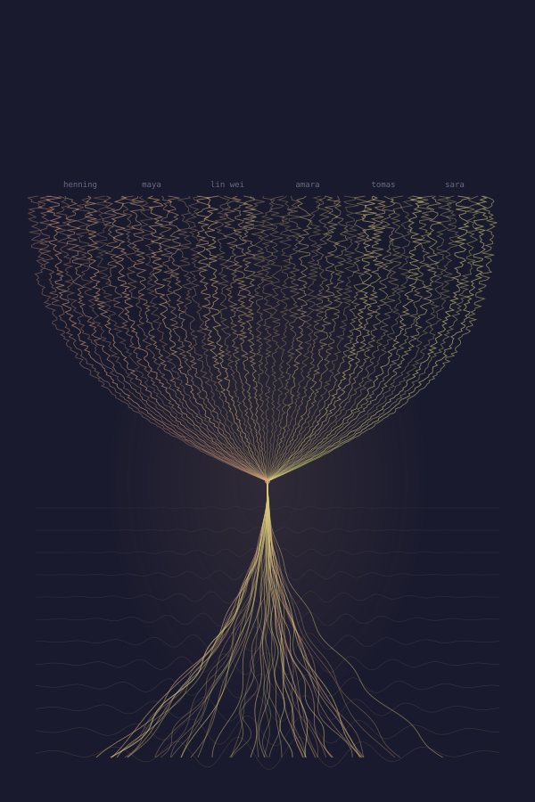

Four lives. Four regions. Four speeds of acceleration. One question: where does the patch stop and the you begin?
The novel asks what happens at the boundary where BCI meets AI — not the science-fiction singularity of superintelligent machines, but the quiet singularity:
The moment you can no longer distinguish your thoughts from the system's suggestions.
Not because the system is smarter than you. Because the system is you — or the version of you it has been building, update by update, while you slept.
Euphoria. Overcommitment. The Wall. Stratification.
The burnout curve is the adoption curve. We already ran this experiment once. We called it social media.
The loop tightened with every chapter.
The same tools reshaping software engineering and scientific research wrote a novel about what happens when they reshape everything else.
The author — a researcher, not a novelist — used agentic AI to write Checkpoint. The process mirrored the novel's warning: each iteration was better, faster, harder to attribute. The human stayed in the loop. The loop got smaller.
Where in the progression from agentic coding to agentic science to agentic writing does it stop being yours?
~150,000 words · 30 chapters · 4 POVs · Draft — March 2026
Computational text analysis of Checkpoint. 143,370 words. 30 chapters. 4 POVs. Compared against classic sci-fi & dystopian novels via Project Gutenberg.
← scroll →
Robert Flassig is a physicist with a background in complex systems modeling, working with machine learning in applied engineering research. He uses AI to enhance his research by deepening and widening exploration paths — and wrote this novel about what happens when you do that to the human brain.
Checkpoint is his first novel. It was co-written with Claude, Anthropic's AI assistant — a process that mirrored the book's central question: where does the human end and the optimization begin?
The concept, characters, themes, and editorial decisions are his. The prose was generated collaboratively — the author directing, shaping, and revising; the AI drafting, proposing, and iterating. Every chapter passed through multiple rounds of human review.
This novel was co-written with Claude, Anthropic's AI assistant. But Claude is not a single author. It is a probability landscape shaped by millions of human beings who will never see this page.
Every sentence carries traces of writers, researchers, teachers, journalists, poets, programmers, and translators whose work entered the training data and became the statistical bedrock from which these words were drawn. They were not asked. They were not credited. They cannot be identified. But they are here — in the rhythm of a paragraph, in the choice of a metaphor, in the way a character pauses before speaking.
This book owes its existence to a crowd that does not know it is a crowd.
To the unnamed many whose words taught the machine that helped write this one: thank you. The debt is real, even if the ledger is lost.
Information pursuant to § 5 TMG (German Telemedia Act):
Prof. Dr. Robert Flassig
Technische Hochschule Brandenburg
Magdeburger Str. 50
14770 Brandenburg an der Havel
Germany
Contact: via GitHub
Responsible for content pursuant to § 55 (2) RSt V: Prof. Dr. Robert Flassig (address as above).
Short version: This website does not collect, store, or process any personal data.
Details:
External links: This site links to external services (GitHub, Ko-fi, Creative Commons). When you follow these links, those services' privacy policies apply. All fonts are self-hosted; no external font services are used.
Your rights: Under the GDPR, you have the right to access, rectification, erasure, restriction of processing, data portability, and objection. Since this site collects no personal data, these rights are satisfied by default. For questions, contact the responsible person listed above.